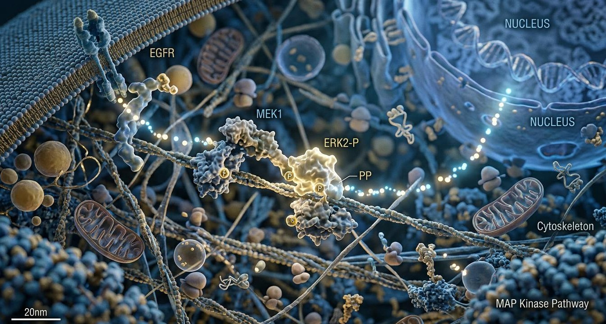

We all now know that chronic stress is widely known as the “silent killer” because it can harm nearly every part of the body, from your digestive and immune systems to your brain, heart, and mental health. But did you know that research shows that chronic stress has also been linked to actively promoting cancer growth? For years, we’ve treated stress as an emotional burden we just have to carry. In reality, long-term stress can act as a biological accelerator, triggering changes throughout the body that may create conditions favorable to disease.
The Cellular Domino Effect
When you’re under constant pressure, your body’s “fight-or-flight” response stays stuck in the ON position. Stress hormones like adrenaline and norepinephrine flood your system and latch onto cell surfaces like a key fitting into a lock. Inside the cell, this binding triggers a chain reaction, specifically ramping up a messenger called cAMP (cyclic adenosine monophosphate) and activating a signaling enzyme known as Protein Kinase A (PKA).
Instead of telling your body to rest and repair, these pathways switch on growth signals that tell abnormal cells to multiply rapidly. At the same time, PKA signaling disarms pro-apoptotic proteins, the natural "self-destruct" signals that help eliminate damaged or mutated cells before they become a bigger problem. In short, chronic stress tricks the body into an ongoing state of emergency where normal cellular maintenance breaks down and mutated cells evade cell death.
Fueling the Spread

Beyond helping tumors grow, chronic stress creates the escape routes that allow cancer cells to move. When stress hormones flood the tissue, they switch on molecular accelerators like Src (pronounced "sark"), a key enzyme that acts as a master switch inside cells.
Once activated, Src reorganizes a cancer cell’s internal skeleton, allowing cells that would normally remain anchored in place to become more mobile and invasive. Simultaneously, stress chemicals release matrix metalloproteinases (MMPs), enzymes that act like chemical bulldozers to break down tissue barriers and clear pathways into blood vessels. To make matters worse, stress-related signaling can help protect these detached cells from Anoikis (a form of cell death normally triggered when a cell detaches from its original matrix). This gives cancer cells a better chance of surviving the journey to other parts of the body.
Lowering the Shield
While stress can help fuel tumar growth, it also weakens the body's natural immune response and lowers defenses. Continuous exposure to stress hormones spikes pro-inflammatory signals (cytokines) while crippling your immune cells. Specialized surveillance cells, including dendritic cells and Natural Killer (NK) cells, can become less effective at recognizing and eliminating abnormal cells.
Even worse, tumors stimulated by stress can release nerve-growth factors that attract new nerve fibers directly into the tumor microenvironment. This can create a cycle in which the tumor attracts more nerve connections, potentially increasing its exposure to stress-related signals while further disrupting the body's immune defenses.
Changing the Narrative
It’s easy to look at stress management as a luxury - a spa day or an afterthought to fit into a busy week. But understanding the biological reality of long-term pressure changes everything. We can't always control the systemic pressures, financial strains, or major life changes thrown our way, but recognizing how stress affects our bodies and overall well-being allows us to reframe self-care.
When we allow ourselves time to slow down and genuinely relax, our bodies begin to shift out of that constant state of alert. Heart rates slow, blood pressure can decrease, breathing becomes more relaxed, and stress hormone levels can begin to settle. The nervous system shifts toward a state that supports rest, recovery, and normal maintenance. In contrast to the prolonged stress response we've explored throughout this article, these periods of relaxation give our bodies an opportunity to restore some of the balance that chronic stress can disrupt.
This doesn't mean that relaxation can undo cellular damage, prevent, or cure cancer, but it does remind us that our physical and emotional well-being are deeply connected. Managing chronic stress isn't just about feeling better in the moment; it's about giving ourselves the opportunity to rest, recover, and support our long-term health. Self-care isn't an indulgence or something we should have to earn. It's an important part of taking care of ourselves.
Discussion & Stories